Week10
Learning With large datasets
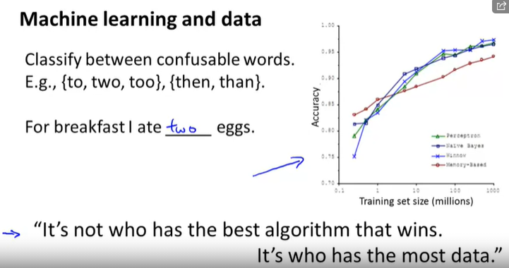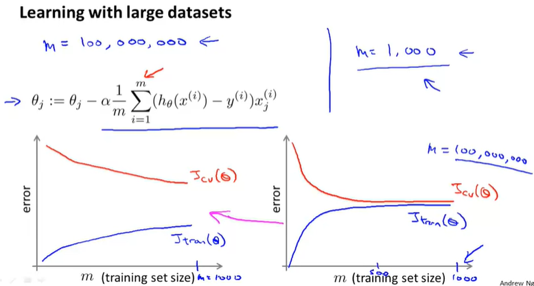Stochastic Gradient Descent
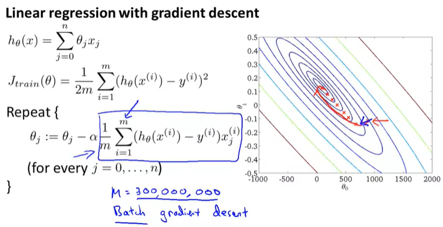 what Stochastic gradient descent is doing is it is actually scanning through the training examples. And first it's gonna look at my first training example x(1), y(1).
And then looking at only this first example, it's gonna take like a basically a little gradient descent step with respect to the cost of just this first training example. So in other words, we're going to look at the first example and modify the parameters a little bit to fit just the first training example a little bit better.
Having done this inside this inner for-loop is then going to go on to the second training example. And what it's going to do there is take another little step in parameter space, so modify the parameters just a little bit to try to fit just a second training example a little bit better.
Having done that, is then going to go onto my third training example.
And modify the parameters to try to fit just the third training example a little bit better, and so on until you know, you get through the entire training set. And then this ultra repeat loop may cause it to take multiple passes over the entire training set. This view of Stochastic gradient descent also motivates why we wanted to start by randomly shuffling the data set.
This doesn't show us that when we scan through the training site here, that we end up visiting the training examples in some sort of randomly sorted order. Depending on whether your data already came randomly sorted or whether it came originally sorted in some strange order, in practice this would just speed up the conversions to Stochastic gradient descent just a little bit.
So in the interest of safety, it's usually better to randomly shuffle the data set if you aren't sure if it came to you in randomly sorted order. But more importantly another view of Stochastic gradient descent is that it's a lot like descent but rather than wait to sum up these gradient terms over all m training examples, what we're doing is we're taking this gradient term using just one single training example and we're starting to make progress in improving the parameters already.
So rather than, you know, waiting 'till taking a path through all 300,000 United States Census records, say, rather than needing to scan through all of the training examples before we can modify the parameters a little bit and make progress towards a global minimum. For Stochastic gradient descent instead we just need to look at a single training example and we're already starting to make progress in this case of parameters towards, moving theparameters towards the global minimum.
So, here's the algorithm written out again where the first step is to randomly shuffle the data and the second step is where the real work is done, where that's the update with respect to asingle training example x(i), y(i).
So, let's see what this algorithm does to the parameters.
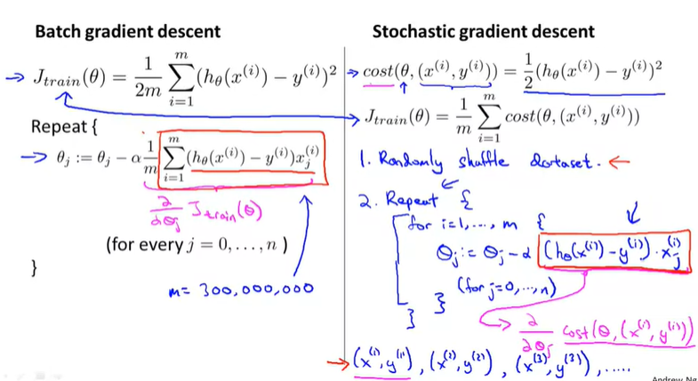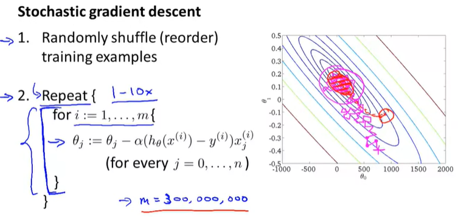Mini-Batch Gradient Descent
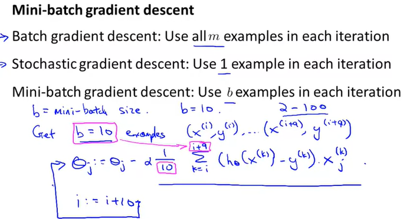 One disadvantage of Mini-batch gradient descent is that there is now this extra parameter b, the Mini-batch size which you may have to fiddle with, and which may therefore take time. But if you have a good vectorized implementation this can sometimes run even faster that Stochastic gradient descent.
So that was Mini-batch gradient descent which is an algorithm that in some sense does something that's somewhat in between what Stochastic gradient descent does and what Batch gradient descent does.
And if you choose their reasonable value of b. I usually use b equals 10, but, you know, other values, anywhere from say 2 to 100, would be reasonably common. So we choose value of b and if you use a good vectorized implementation, sometimes it can be faster than both Stochastic gradient descent and faster than Batch gradient descent.
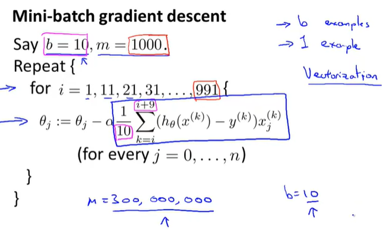Stochastic Gradient Descent convergence
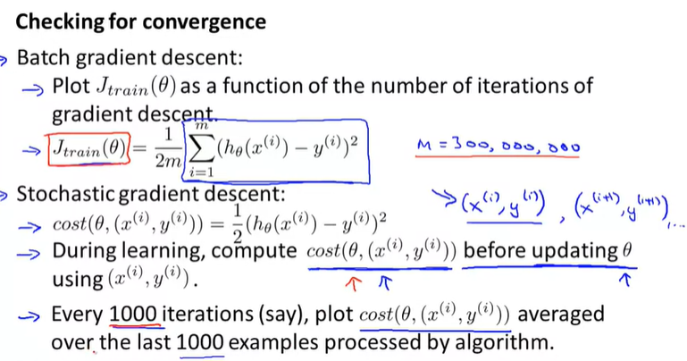You don't want to have to pause stochastic gradient descent periodically in order to compute this cost function since it requires a sum of your entire training set size.
And the whole point of stochastic gradient was that you wanted to start to make progress after looking at just a single example without needing to occasionally scan through your entire training set right in the middle of the algorithm, just to compute things like the cost function of the entire training set. So for stochastic gradient descent, in order to check the algorithm is converging, here's what we can do instead.
Let's take the definition of the cost that we had previously. So the cost of the parameters theta with respect to a single training example is just one half of the square error on that training example. Then, while stochastic gradient descent is learning, right before we train on a specific example.
So, in stochastic gradient descent we're going to look at the examples xi, yi, in order, and then sort of take a little update with respect to this example. And we go on to the next example, xi plus 1, yi plus 1, and so on, right? That's what stochastic gradient descent does. So, while the algorithm is looking at the example xi, yi, but before it has updated the parameters theta using that an example, let's compute the cost of that example. And we want to do this before updating theta because if we've just updated theta using example, you know, that it might be doing better on that example than what would be representative.
Finally, in order to check for the convergence of stochastic gradient descent, what we can do is every, say, every thousand iterations, we can plot these costs that we've been computing in the previous step.
We can plot those costs average over, say, the last thousand examples processed by the algorithm. And if you do this, it kind of gives you a running estimate of how well the algorithm is doing. on, you know, the last 1000 training examples that your algorithm has seen.
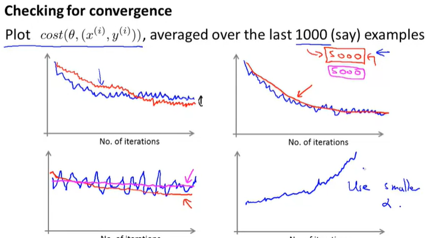 One of the reasons people tend not to do this is because you end up needing to spend time playing with these 2 extra parameters, constant 1 and constant 2, and so this makes the algorithm more finicky. You know, it's just more parameters able to fiddle with in order to make the algorithm work well.
But if you manage to tune the parameters well, then the picture you can get is that the algorithm will actually around towards the minimum, but as it gets closer because you're decreasing the learning rate the meanderings will get smaller and smaller until it pretty much just to the global minimum.
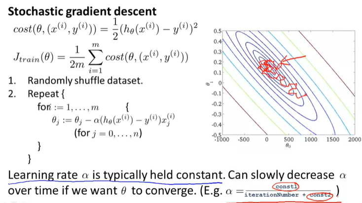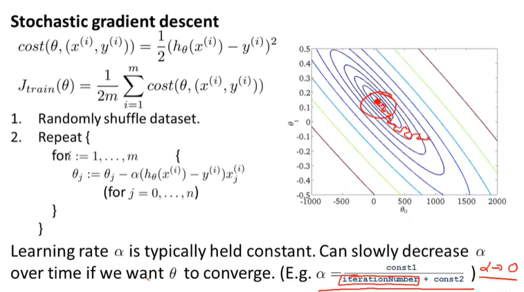Online learning
The online learning setting allows us to model problems where we have a continuous flood or a continuous stream of data coming in and we would like an algorithm to learn from that. Today, many of the largest websites, or many of the largest website companies use different versions of online learning algorithms to learn from the flood of users that keep on coming to, back to the website.
Specifically, if you have a continuous stream of data generated by a continuous stream of users coming to your website, what you can do is sometimes use an online learning algorithm to learn user preferences from the stream of data and use that to optimize some of the decisions on your website.
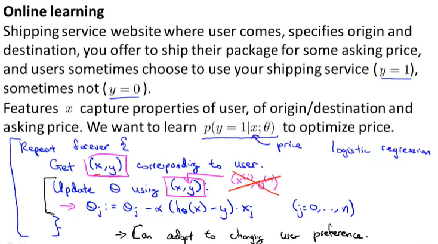learning the predicted click-through rate, the predicted CTR
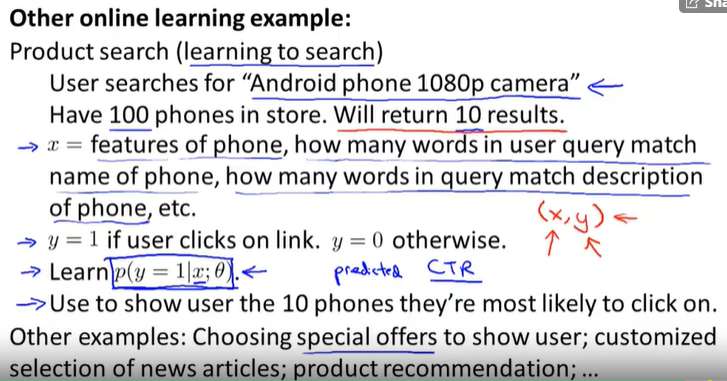 that was the online learning setting and as we saw, the algorithm that we apply to it is really very similar to this schotastic gradient descent algorithm, only instead of scanning through a fixed training set, we're instead getting one example from a user, learning from that example, then discarding it and moving on.
And if you have a continuous stream of data for some application, this sort of algorithm may be
well worth considering for your application.
And of course, one advantage of online learning is also that if you have a changing pool of users, or if the things you're trying to predict are slowly changing like your user taste is slowly changing, the online learning algorithm can slowly adapt your learned hypothesis to whatever the latest sets of user behaviors are like as well.
Map reduce and Data parallelism
Jeffrey dean Sanjay ghemawat
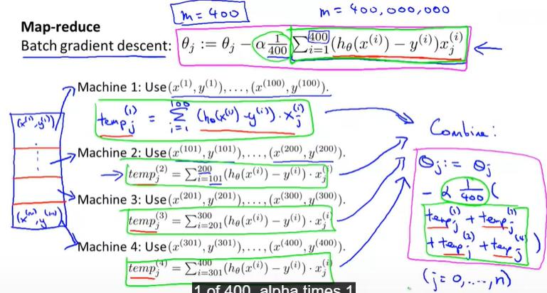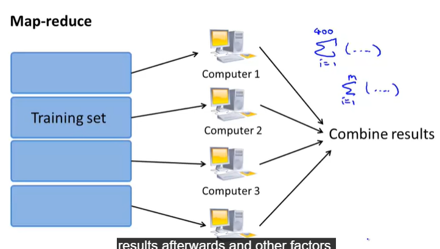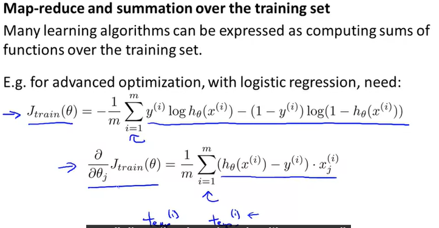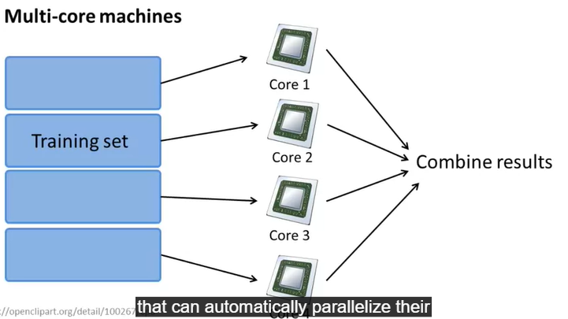